Issue #793, Voorea, a village (seed 26, index 22)
Chosen because it is an inland village on a river; all 47 inland villages of 651 stand on one; the earlier round's Voorea.
Antique, hand-coloured
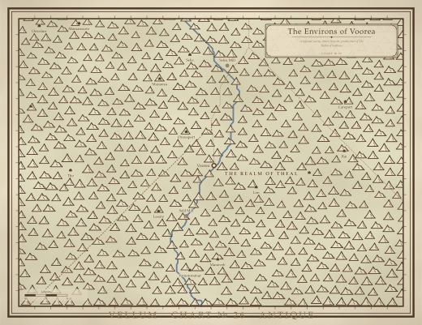
From directly above. Today: the Explorer's close-up, band 5 (the control)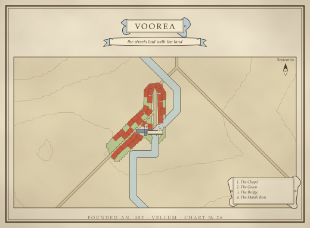
From directly above. A. Streets that follow the land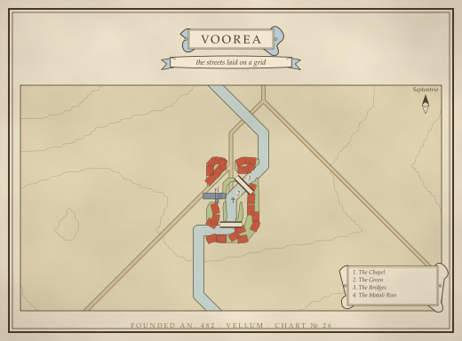
From directly above. B. Streets laid on a grid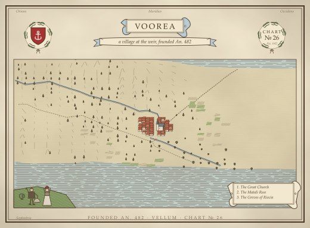
The bird's-eye. The ruled mock C, its invented town (the control)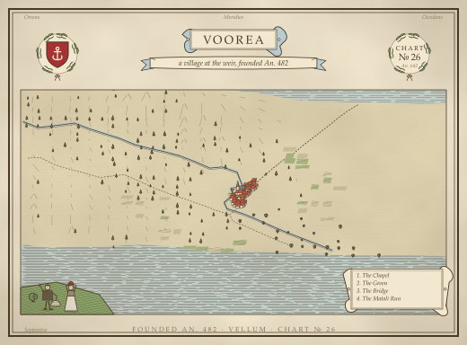
The bird's-eye. A. Streets that follow the land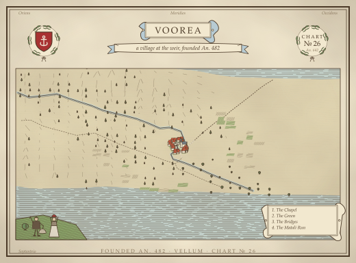
The bird's-eye. B. Streets laid on a gridThe profile. Today's plate, E (the control)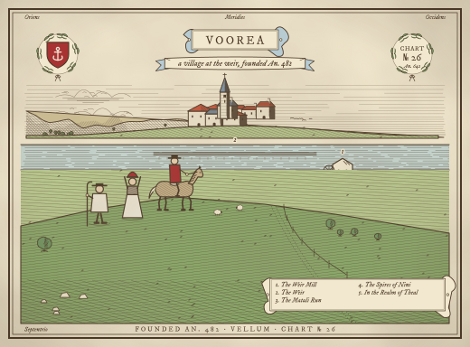
The profile. A. Streets that follow the land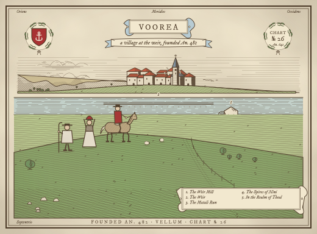
The profile. B. Streets laid on a gridInk
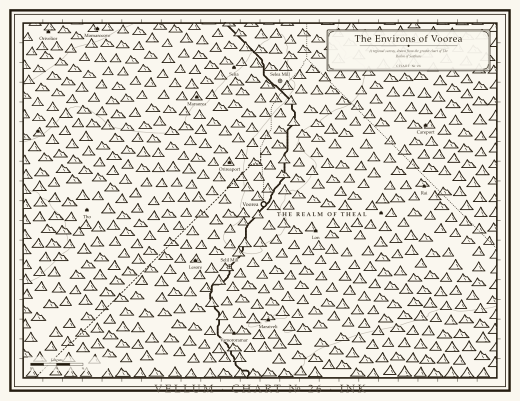
From directly above. Today: the Explorer's close-up, band 5 (the control)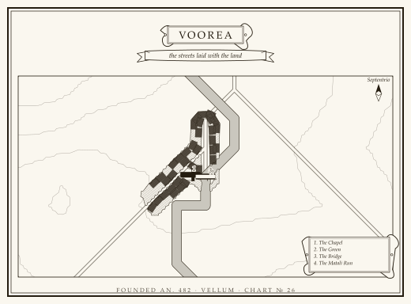
From directly above. A. Streets that follow the land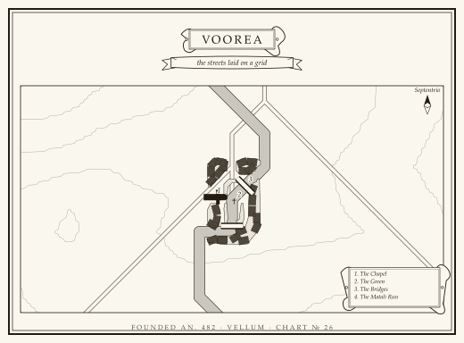
From directly above. B. Streets laid on a grid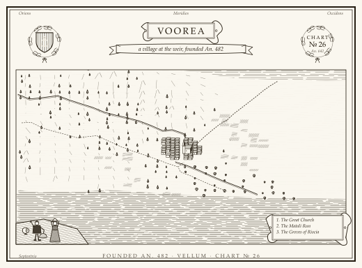
The bird's-eye. The ruled mock C, its invented town (the control)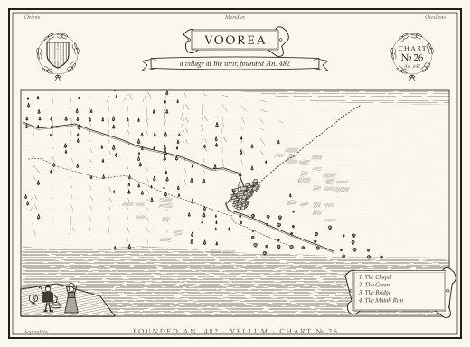
The bird's-eye. A. Streets that follow the land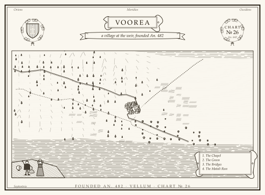
The bird's-eye. B. Streets laid on a grid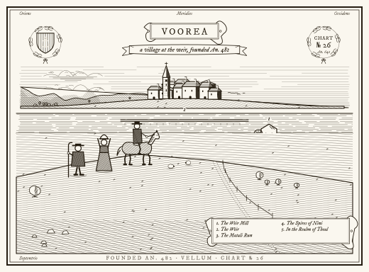
The profile. Today's plate, E (the control)The profile. A. Streets that follow the land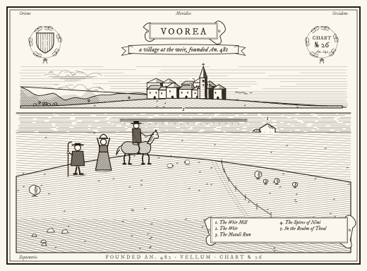
The profile. B. Streets laid on a grid